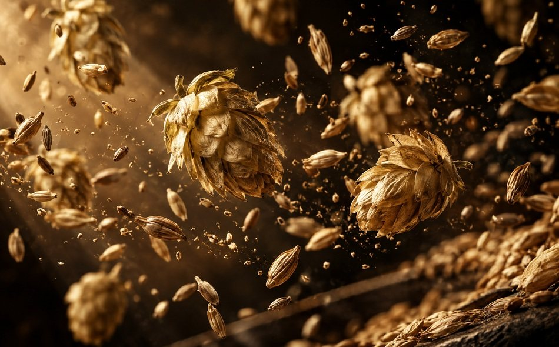
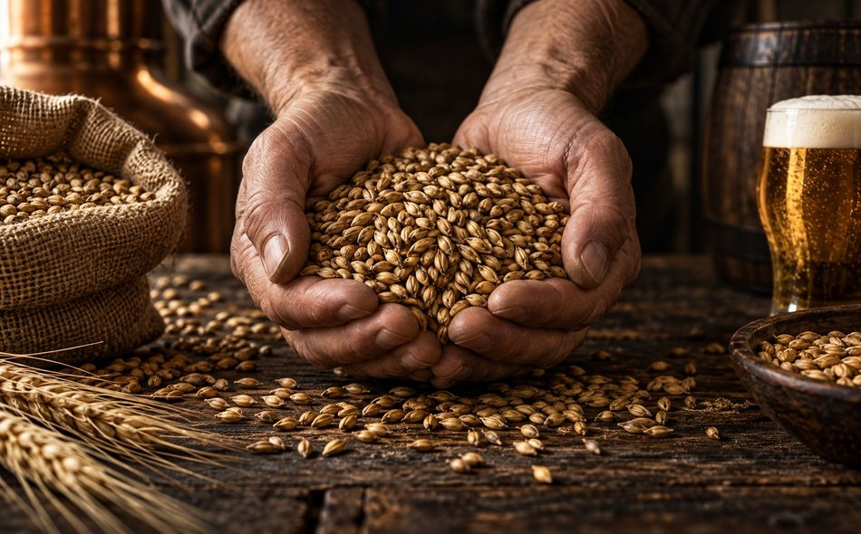
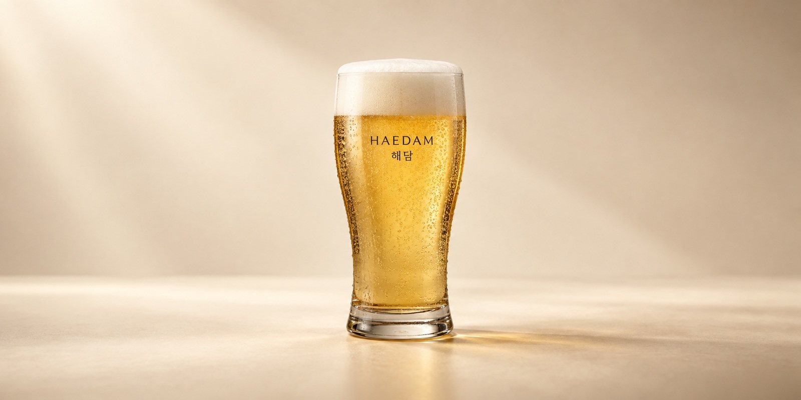
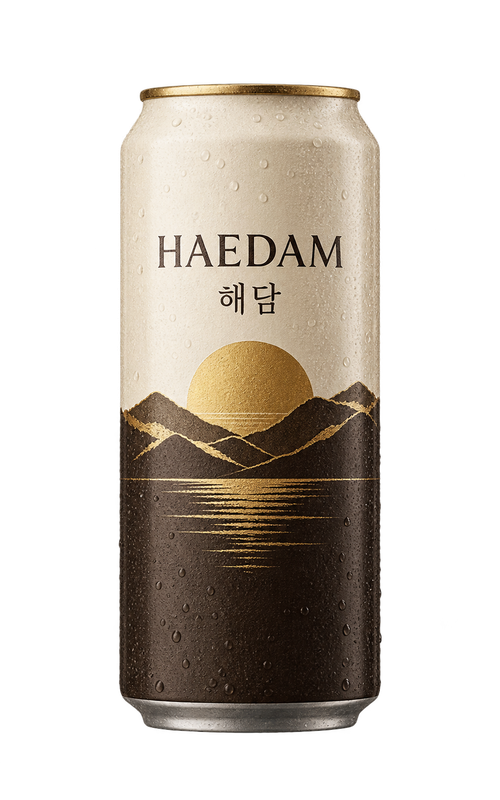
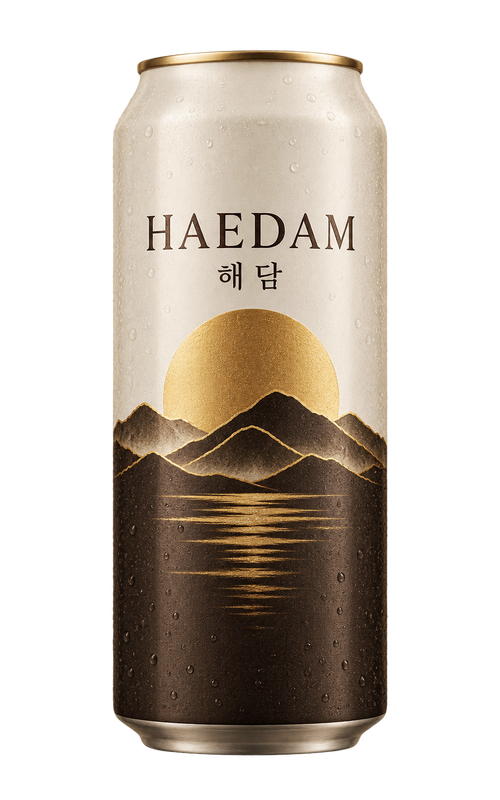
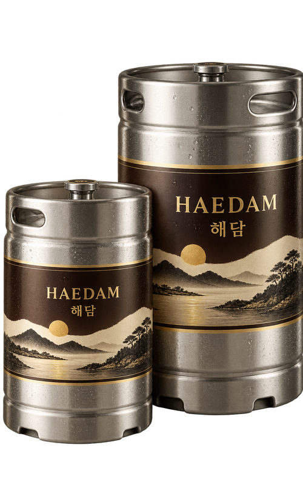

해담만의 독보적인 맛의 비결
해담은 맥주 순수령을 기준으로 정통 방식을 고집하는 프리미엄 맥주 브랜드입니다.
1936년 브랜드 탄생 이래 맥주 본연의 맛을 추구하며 그 맛을 발전시켜 왔습니다.
해담의 맛과 품질은 결코 타협할 수 없는
‘진짜 맥주’에 대한 고집으로부터 완성됩니다.
- 맥아 100%로 만든 진한 맥주 맛
- 직접 배양한 해담 전용 효모
- 아낌없이 넣은 할러타우 아로마 홉
- 일반 맥주 대비 1.5배* 이상 긴 장기 숙성
* 자사 제품 대비
해담이 맛있는 5가지 이유
-

향 해담만의 향으로 한층 더 넓게 퍼지는 깊고 풍부한 맛
엄선한 국내산·유럽산 맥아와 할러타우 아로마 홉의 향, 그리고
해담 효모의 화사한 향이 절묘하게 어우러져 한층 더 넓게
퍼지는 깊고 풍부한 맛을 경험할 수 있습니다. -
거품 세밀한 담금 공정 관리로 완성한 맥주 거품의 높은 품질과 유지력
해담 맥주의 깊고 풍부한 맛을 한층 더 맛있게 즐길 수 있도록
일반 맥주 대비 1.5배* 더 오래 숙성할 뿐 아니라 담금 공정
관리에 심혈을 기울여, 잡미 없이 균형이 좋은 풍부한 맛을
느낄 수 있습니다.* 자사 제품 대비
-
빛깔 해질녘 하늘과 같은 투명한 황금빛
잔을 들어 담긴 해담 맥주를 들여다보세요. 유리잔 너머의
황금빛 풍경은 해담만의 특별한 빛깔입니다. 일반 맥주 대비
1.5배* 더 오래 숙성시켜 완성한 색입니다.* 자사 제품 대비
-

풍미 강약이 조화로운 매력적인 맥주 맛
부원료를 전혀 쓰지 않고 맥아 100%와 홉으로 만든 해담 맥주는
맥아와 홉의 사용량이 많아, 재료가 가진 감칠맛을 살리려면
일반 맥주보다 더 오랜 시간이 필요합니다. 그 시간이
강약의 균형을 만듭니다. -
목넘김 감칠맛을 위한 기다림의 미학
맥주의 감칠맛은 맥아의 양과 비례합니다. 해담은 장기 숙성을
통해 맥아 100%에서만 가능한 감칠맛은 살리고 잡미를 제거해
깔끔한 맛을 완성했습니다.
해담 맥주잔에 담긴 5가지 비밀
마시기 전은 물론 마시는 동안, 그리고 마시고 난 후에도 계속 맛있다고 느낄 수 있도록
시각·청각·촉각·미각·후각으로 이어지는 오감의 우선순위를 고려해 설계했습니다.
해담 맥주 맛을 극대화할 해담 전용 맥주잔을 만나보세요.

123451맥주잔 입구
맥주의 온도와 향이 흩어지지 않도록 입구를 3mm 좁혔습니다. 코끝에 향이 먼저 닿습니다.
2거품이 서는 자리
잔 안쪽 곡선이 꺾이는 지점에서 거품이 촘촘하게 다시 섭니다. 7:3 비율이 오래 유지됩니다.
3해담 로고
로고는 짙은 녹색과 금박 두 가지로 인쇄해, 맥주 너머로 보일 때 색이 가장 선명합니다.
4잔의 두께
입에 닿는 부분은 2.2mm로 얇게, 아래로 갈수록 두껍게. 온도를 손에 덜 빼앗깁니다.
5바닥의 각인
바닥에 새긴 미세한 홈에서 탄산이 일정하게 올라와 마지막 한 모금까지 거품이 남습니다.
해담은 한 모금 한 모금 음미하면서 마실 때
더 맛있는 최적의 균형을 추구합니다.
맥주의 중간 맛을 다시 잡아 보리의 감칠맛이 한층 더 잘 느껴지며
부드러운 여운이 오래 이어집니다.


